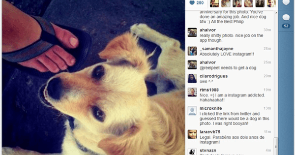

On July 16, 2010, Instagram co-founder Kevin Systrom uploaded the first post on Instagram. Actually, it was uploaded using an app called Codename, which three months later became the app we all know and love. It's only fitting—given how many pets have become famous from the app—that the first photo on Instagram shows Systrom's cute pup sitting at a taco stand in Mexico.
